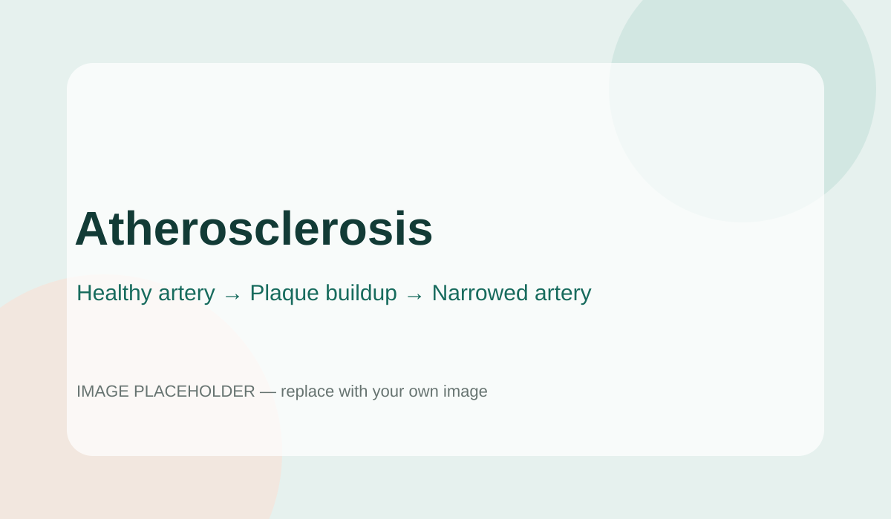

STAGE 01
A healthy artery
Blood has a clear pathway through the centre of the artery.
Atherosclerosis is a condition in which plaque builds up inside artery walls, which can gradually narrow the space available for blood flow.

Atherosclerosis happens when plaque made from substances including cholesterol, fats and other materials builds up in artery walls. As plaque increases, an artery can become narrower and blood flow may be reduced.
It can affect arteries throughout the body, including those supplying the heart, brain, kidneys and limbs.
Blood has a clear pathway through the centre of the artery.
Deposits can accumulate within the artery wall over time.
A larger plaque can narrow the artery and reduce blood flow.
Open each panel to explore a different part of the process.
Damage or changes to the artery wall can be associated with risk factors such as unhealthy cholesterol levels, high blood pressure and smoking. Cholesterol and other materials can then collect in the affected area.
Over time, this material can contribute to plaque formation and artery narrowing.
As plaque grows, it can reduce the open space inside an artery. This narrowing may limit the amount of oxygen-rich blood reaching tissues supplied by that artery.
Atherosclerosis can affect arteries supplying the heart, brain, kidneys and limbs. The effects depend on which vessels are affected and how much blood flow is reduced.
Atherosclerosis can develop gradually. Symptoms may only become noticeable when blood flow is significantly affected or a complication occurs.
A range of health conditions, lifestyle factors and genetics can affect the risk of plaque buildup and cardiovascular disease.
Certain cholesterol levels can contribute to plaque formation.
Persistently high blood pressure can damage artery walls.
Smoking is associated with cardiovascular disease and blood-vessel damage.
Diabetes is associated with increased cardiovascular risk.
Different arteries supply different parts of the body, so symptoms can vary.
Reduced blood supply to the heart may be associated with symptoms such as chest discomfort.
Problems affecting arteries supplying the brain can contribute to neurological complications.
Reduced circulation to the legs can cause pain or discomfort during activity.
A blockage affecting a coronary artery can interrupt blood supply to heart muscle.
Problems affecting arteries supplying the brain can contribute to stroke.
Reduced circulation can affect the limbs, especially the legs.
Heart-healthy habits and management of risk factors can help prevent or delay atherosclerosis and its complications.
Choose a varied diet with vegetables, fruit, whole grains and other nutritious foods.
Regular physical activity supports cardiovascular health and can help manage risk factors.
Not smoking is an important part of protecting cardiovascular health.
Healthcare professionals can help monitor blood pressure, cholesterol and blood sugar.
Management depends on individual risk, symptoms and which arteries are affected.
Healthy eating, physical activity and avoiding smoking can be part of a management plan.
View prevention →Healthcare professionals may prescribe medicines to manage cholesterol, blood pressure or other risks.
Read the evidence →In some circumstances, procedures may be used to improve blood flow through affected arteries.
Talk to a professional →Replace the placeholder links below with the videos you have chosen for your project.
Learning about cholesterol, blood pressure, diabetes, smoking and other risk factors can help you have informed conversations with a healthcare professional.
Use this section for the sources your teacher requires. The examples below are reputable health-information sources and can be replaced or expanded with your own references.